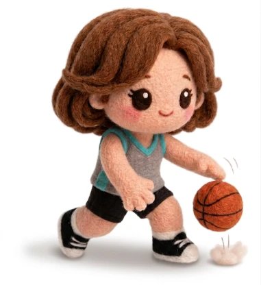
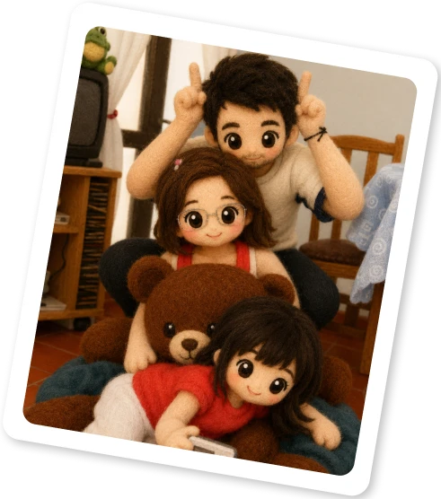
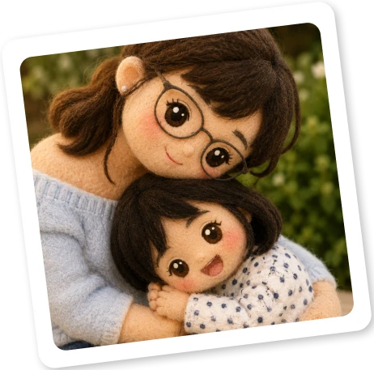
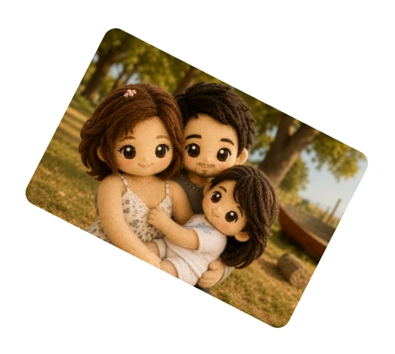
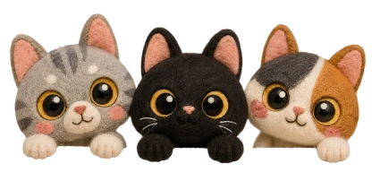

Si es fin de semana,
esta frío y gris. Sale
maratonear serie.
Acá vas a encontrar un poquito de las cosas que me gustan, las que me dan curiosidad y algunas otras que simplemente forman parte de mí.


Soy la menor de cuatro hermanos, y parte de mi infancia me la pasé haciendo travesuras con ellos (cuando los planetas se alineaban y todo era paz y armonía entre nosotros).
Mis padres son mi ejemplo a seguir, personas responsables que estuvieron para cada uno de nosotros en todo momento. Al día de hoy, no entiendo como hicieron, pero lograron formar a cuatro seres humanos sin morir en el intento.
Desde pequeña fui alguien que supo adaptarse al contexto. Teniendo una madre
que debía repartirse entre todos, no podía esperar a que todo me lo enseñe. Así
que pasaba parte de mis días prestando atención a lo que les enseñaba a mis
hermanos y luego intentaba hacerlo por mi cuenta. También me sentaba en la
mesada para mirar cómo preparaba las comidas.
Así forje mi lado autodidacta y aprendí desde barrer, guardar y ordenar...
Hasta cual es la medida justa de arroz para seis comensales.
Quienes me conocen dicen que no descanso ni cuando intento hacerlo, porque no entienden cómo puedo relajarme armando rompecabezas o tejiendo.
Son dos actividades que requieren constancia, atención al detalle y aceptar que
vas a pasar más tiempo buscando piezas o desenredando lana que haciendo
otra cosa.
Pero, como dicen, sobre gustos no hay nada escrito.
Tejer es mi cable a tierra. Pensar qué voy a tejer y para quién es parte de lo que
más disfruto. A veces son piezas utilitarias para el hogar; otras, un suéter para mí
o para alguien querido.
Todo empieza eligiendo los colores, las agujas, tomando medidas y calculando el
material necesario. Después vienen las pruebas de tensión, los puntos y las
muestras que confirman si está todo listo para empezar a tejer.
¿Otros pasatiempos?...

Si es fin de semana,
esta frío y gris. Sale
maratonear serie.

Juegos de ingenio, mis
fieles compañeros de
viajes sin aburrimiento.

Salir a patinar en una
tarde agradable nunca
es un mal plan.

El deporte me enseñó que crecer no es cuestión de suerte, sino de estar ahí todos los días, ponerle cabeza y disfrutar el proceso. Para mí, de eso se trata.
Soy competitiva, pero conmigo misma. Mi idea de ganar es mirar atrás y sentir que hoy hago las cosas un poco mejor que ayer.
Me encanta el basquet porque me recuerda que las mejores cosas siempre se logran compartiendo. Nadie mete un triple sin alguien que le pase la pelota.
En la cancha, cada tiro necesita práctica y paciencia. Avanzar paso a paso, sin perder el foco y la alegría.
El juego cambia en un segundo y hay que saber reaccionar. Aprender a leer lo que pasa alrededor y acomodarme rápido es lo que me ayuda a no quedarme frenada.
Llegué a La Plata con un objetivo: mi carrera. No tenía idea que iba a conseguir eso y además un par de seres maravillosos que me aman y aguantan. Ellos son mi logro en la vida.
Yo daba por sentado que sería la tía solterona, y una vez más el pronóstico se equivocó. Desde septiembre del 2011 sale el sol cada día de mis días y todo por ellos.




Aun queda mucho por conocer...
Esto fue apenas un vistazo a la persona detrás de todos los proyectos.
Si te llame la atención, quizás sea momento de que visites mi lado profesional.